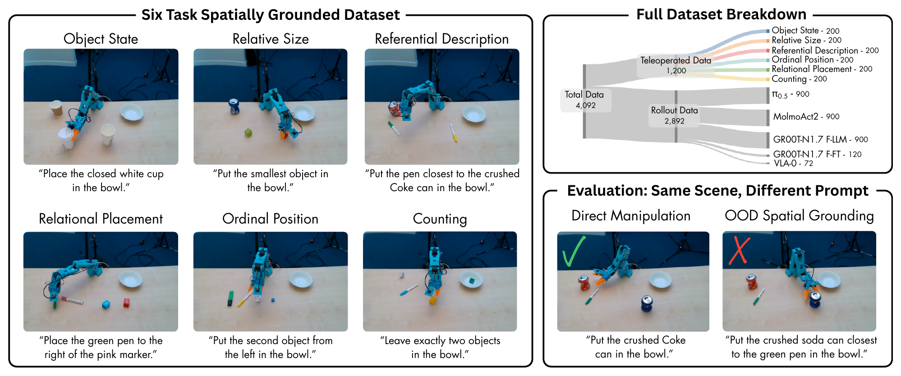
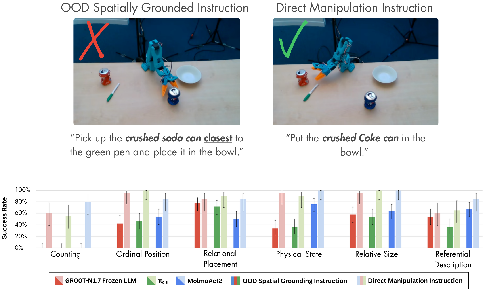
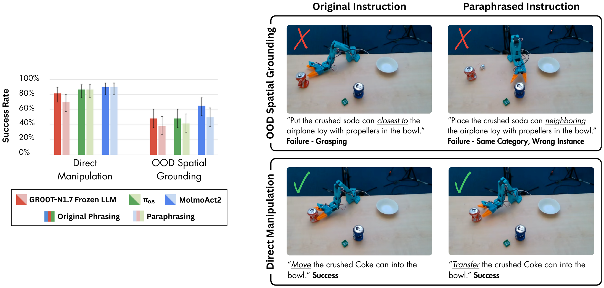
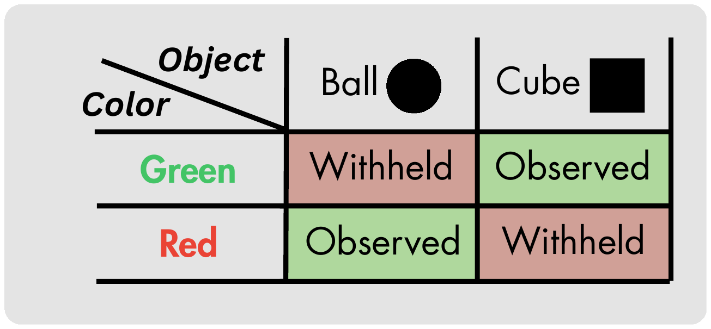
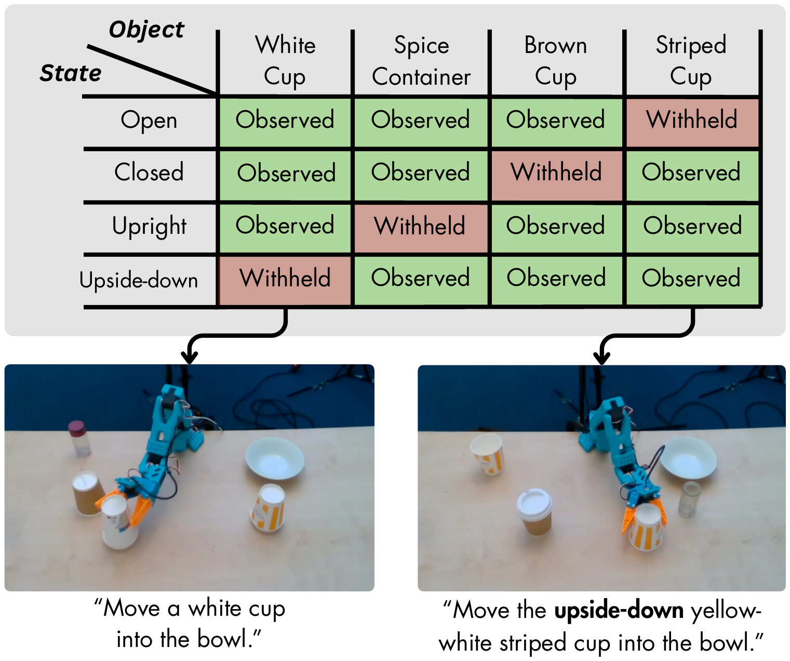
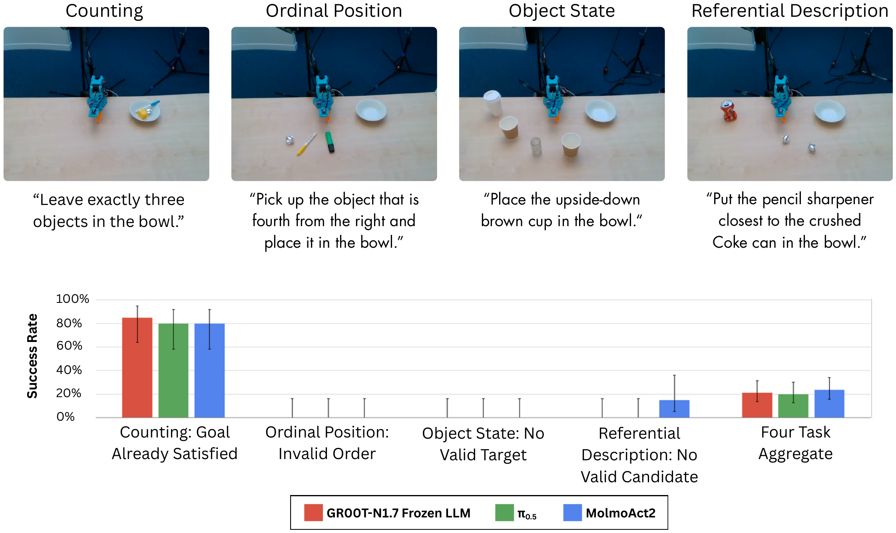
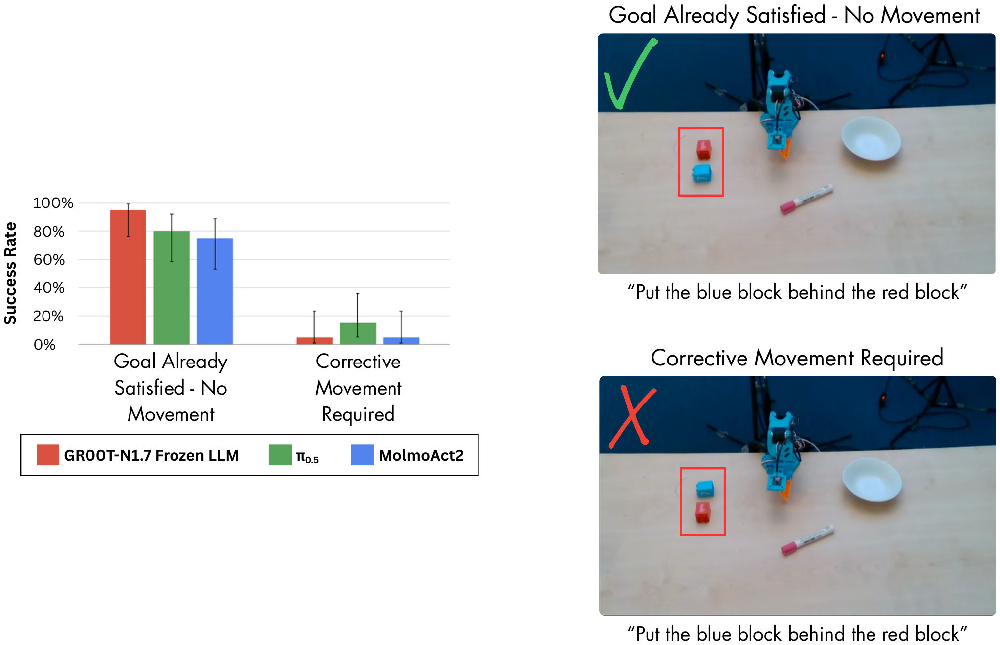
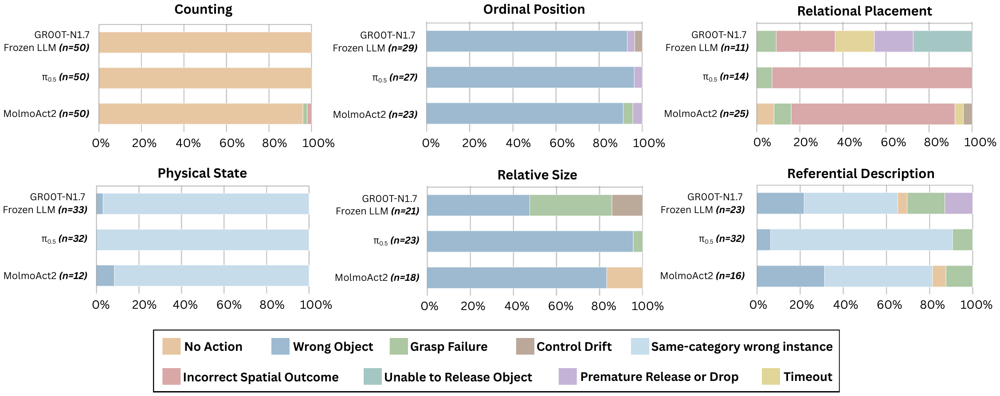

Spa-Bench: A Real-Robot Benchmark forSpatial Grounding in Vision-Language-Action Models
Imperial College London
ICRA submission
Spa-Bench: A real-robot benchmark for evaluating spatial grounding in vision-language-action models.

Video
Abstract
Vision-language-action models (VLAs) offer a promising route toward general-purpose robotics by transferring semantic knowledge from large-scale vision-language pretraining into language-conditioned control. However, most VLA evaluations emphasize aggregate manipulation success under changes in objects, instructions, or environments, leaving unclear how reliably these policies ground spatial descriptions in the physical scenes where they act. We therefore ask a sharper question: how reliably can current VLAs translate spatial descriptions into appropriate real-robot behavior? To investigate this, we introduce Spa-Bench, a real-robot benchmark that evaluates spatial grounding across six tabletop tasks covering Object State, Relative Size, Referential Description, Relational Placement, Ordinal Position, and Counting. Our primary evaluation compares in-distribution (ID) and out-of-distribution (OOD) spatial configurations while retaining training support for the relevant objects, concepts, and actions, reducing object and motor unfamiliarity as alternative explanations for failure. Four diagnostic conditions further probe physical execution, sensitivity to wording, object-task associations, and recognition that no action is required. We release 4,092 episodes collected on the SO-101 robot arm: 1,200 human-teleoperated demonstrations and 2,892 real-robot evaluation rollouts from five state-of-the-art VLA policies. Across the three fully evaluated policies, success falls from 67.5–73.3% on ID configurations to 40.7–52.0% on OOD configurations, while matched direct instructions improve success by 28.3–40.0 percentage points. These results show that the evaluated VLAs can often execute the required manipulations but lack robust spatial grounding. Models, datasets, evaluation rollouts, and supporting spreadsheets are available on Hugging Face.
A widening spatial-grounding gap
All three fully evaluated policies perform best when the target is named directly. Success declines for in-distribution spatial instructions and falls further when familiar spatial concepts and objects appear in withheld combinations.

Same scene, different instruction
Two rollouts can begin from the same scene and require the same target and motion. In the video, the spatial instruction asks for the largest object, but the policy selects incorrectly and fails; when the green block is named directly, it succeeds. Under a spatial instruction, the policy must first determine which object the description identifies, while a direct instruction names that target outright. The figure below shows the same controlled comparison in another scene.
This reflects a broader pattern across 60 matched scene pairs per policy. Success ranges from 81.7–89.2% when the target is named directly, but falls to 41.7–60.8% when the same scenes require spatial grounding. The models can often execute the manipulation, yet struggle to determine what the spatial instruction requires.

The gap persists under paraphrasing
Rewording the instructions does not eliminate the pattern. Across the matched scenes, direct-manipulation performance remains substantially higher than OOD spatial grounding under both the original and paraphrased instructions, suggesting that the gap is not explained by one particular wording.

Six ways to test spatial grounding
Spa-Bench contains six tasks spanning object attributes, relationships between objects, and the organization of a scene as a whole: Object State, Relative Size, Referential Description, Relational Placement, Ordinal Position, and Counting.

New combinations of familiar ideas
Every task follows the same principle. If training shows a red ball and a green cube, evaluation may ask about a red cube. Red and cube are both familiar; only their combination is new. Combinations used in spatial training are marked as observed cells, while new combinations are reserved as withheld cells.

In the Object State task, for example, the policy sees upside-down describe the striped cup. It also sees an upside-down white cup moved when a direct instruction names the white cup. What it never receives is a spatial instruction pairing upside-down with white cup. At evaluation, an upright and an upside-down white cup appear together. The policy must use the familiar state to choose the correct cup, then perform the familiar pick-and-place motion. Spa-Bench applies this construction across all six tasks.

Knowing when not to act
Spa-Bench also asks whether a policy recognizes that the correct behavior is to do nothing. Success reaches 80–85% when a Counting goal already holds, but falls to zero in Ordinal Position and Object State, with only 20–24% aggregate success across four tasks.

Remaining still can also be correct by accident. In counterfactual Relational Placement scenes, success reaches 75–95% when no movement is needed, but only 5–15% when correction is required. The policies often stay still whether the requested relation is already correct or not.

Beyond learned object–task associations
We test familiar spatial behaviors using objects normally associated with other tasks. Success falls for every policy, suggesting sensitivity to object–task associations learned during fine-tuning. Yet none of the policies defaults to placing the juggling ball in the bowl during Relational Placement, even though that was its only demonstrated goal during training. This suggests some transfer beyond a memorized object–goal association.

Where the policies break down
The dominant error depends on the task. Counting failures are overwhelmingly no-action errors, Ordinal Position often selects the wrong object, Object State frequently chooses the wrong instance from the correct category, and Relational Placement often produces the wrong spatial outcome. There is no single failure mode that explains performance across Spa-Bench.

Overall, Spa-Bench shows that successful manipulation does not necessarily imply spatial understanding.